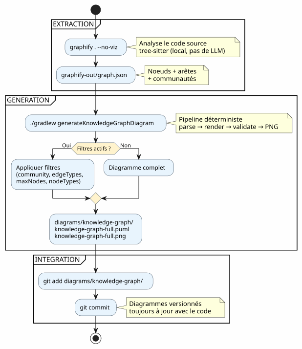
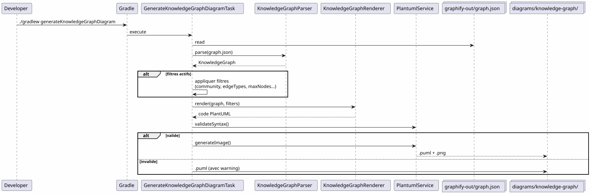
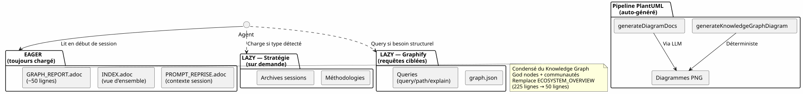
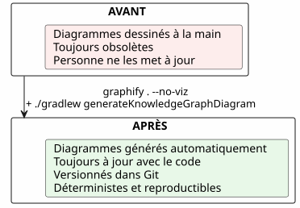

Integrating Graphify into a Gradle workflow: from Knowledge Graph to PlantUML diagram in one command
Published on 19 April 2026
- The problem: diagrams always lagging behind the code
- The solution: a deterministic Knowledge Graph → PlantUML pipeline
- Step 1: Install Graphify and extract the Knowledge Graph
- Step 2: The Gradle plugin transforms the Knowledge Graph into PlantUML
- Step 3: Daily usage
- files
- ). On Kotlin code, this is nearly instantaneous because tree-sitter works locally without LLM calls.
- from the graph, processes them via LLM (dogfooding)
- , reviewed in PR, versioned in Git.
- To close the loop, here is the pipeline diagram as it would be generated by the plugin:
- __
- Commit results
- ) consume LLM tokens
Your codebase grows. Module dependencies multiply. Architecture documentation becomes obsolete before it’s even written. What if your Gradle build could automatically generate up-to-date diagrams from the actual code structure? That’s exactly what the Graphify + PlantUML Gradle Plugin pipeline does:`graphify . --no-viz`extracts the Knowledge Graph,`./gradlew generateKnowledgeGraphDiagram`transforms it into PlantUML diagrams. Zero LLM, zero manual work, 100% deterministic.
- toc
-
[]
The problem: diagrams always lagging behind the code
Every project exceeding a few thousand lines experiences this syndrome:
-
An architecture diagram is drawn at the start of the project
-
The code evolves, dependencies change
-
The diagram becomes a decorative lie
-
Nobody updates it because it’s tedious
-
Newcomers rely on it and make mistakes

The question isn’t do we need diagrams? — everyone knows we do. The question is:who keeps them up to date?
The answer: nobody. Unless it’s automatic.
The solution: a deterministic Knowledge Graph → PlantUML pipeline
The principle is simple: instead of drawing diagrams by hand, wegenerate them from the actual code structure.

Two commands. That’s it.
# Étape 1 : extraire le Knowledge Graph
graphify . --no-viz
# Étape 2 : générer les diagrammes PlantUML
./gradlew generateKnowledgeGraphDiagramThe result? Files`.puml` et .png`in`diagrams/knowledge-graph/, versioned in Git, always in sync with the code.
Step 1: Install Graphify and extract the Knowledge Graph
Installation
Graphify is a Python tool that analyzes your codebase and builds a structured knowledge graph:
# Méthode recommandée
uv tool install graphifyy && graphify install --platform opencode
# Alternative avec pip
pip install graphifyy && graphify install --platform opencodeConfiguring exclusions
Create a`.graphifyignore`file at the project root to exclude files that are not part of the business logic:
# Secrets — JAMAIS dans le graphe
*-context.yml
*.env
# Fichiers générés
build/
.gradle/
# Tests fonctionnels
src/functionalTest/Extracting the Knowledge Graph
graphify . --no-vizThe`--no-viz`flag skips HTML generation (useless in a Gradle pipeline). The result is a`graphify-out/graph.json`file containing:
-
Nodes: classes, functions, files — with their type and community
-
Edges: relations between nodes (EXTRACTED from code, INFERRED by the LLM)
-
Communities: automatic groupings of linked nodes
{
"nodes": [
{"id": "0", "label": "LlmService", "file_type": "code", "community": 0},
{"id": "1", "label": "ApiKeyPool", "file_type": "code", "community": 0},
{"id": "2", "label": "PlantumlService", "file_type": "code", "community": 1}
],
"links": [
{"source": "1", "target": "0", "relation": "uses", "confidence": "EXTRACTED", "weight": 0.9},
{"source": "0", "target": "2", "relation": "calls", "confidence": "INFERRED", "weight": 0.7}
]
}|
The source code ( |
Step 2: The Gradle plugin transforms the Knowledge Graph into PlantUML
Pipeline architecture
The`com.cheroliv.plantuml`plugin integrates a`generateKnowledgeGraphDiagram`task that transforms`graph.json`into PlantUML diagrams in atotally deterministic manner:

Internal components
| Component | Role |
|---|---|
|
Parse`graph.json`— supports 3 formats: native graphify ( |
|
Deterministically transforms a`KnowledgeGraph`into PlantUML code. Groups by type, communities into packages, automatic legend. |
|
Gradle task that orchestrates: parse → render → validate → PNG. Configurable via Gradle properties. |
|
Data models:`KnowledgeGraph`, |
|
Syntax validation + PNG rendering (reused by all plugin tasks). |
Rendering rules
The renderer applies deterministic visual conventions:
| Edge type | PlantUML Notation | Meaning |
|---|---|---|
EXTRACTED |
|
Relation extracted from source code (certainty) |
INFERRED |
|
Relation inferred by the LLM (confidence score) |
AMBIGUOUS |
|
Ambiguous relation (to be verified) |
Communities are rendered as PlantUML packages with an automatic color palette.
Step 3: Daily usage
Full diagram
# Générer le diagramme du Knowledge Graph complet
./gradlew generateKnowledgeGraphDiagramOutput:`diagrams/knowledge-graph/knowledge-graph-full.puml`+.png
Filter by community
# Une seule communauté
./gradlew generateKnowledgeGraphDiagram \
-Pplantuml.kg.community=community_0
# Limiter le nombre de noeuds (lisibilité)
./gradlew generateKnowledgeGraphDiagram \
-Pplantuml.kg.community=community_0 \
-Pplantuml.kg.maxNodes=15Filter by edge type
# Uniquement les relations certaines (EXTRACTED)
./gradlew generateKnowledgeGraphDiagram \
-Pplantuml.kg.edgeTypes=EXTRACTED
# Relations certaines + inférées
./gradlew generateKnowledgeGraphDiagram \
-Pplantuml.kg.edgeTypes=EXTRACTED,INFERREDFilter by node type and confidence
# Uniquement les classes de code
./gradlew generateKnowledgeGraphDiagram \
-Pplantuml.kg.nodeTypes=code
# Seuil de confiance minimum (pour les INFERRED)
./gradlew generateKnowledgeGraphDiagram \
-Pplantuml.kg.minConfidence=0.7Custom output directory
./gradlew generateKnowledgeGraphDiagram \
-Pplantuml.kg.outputDir=docs/architectureComplete properties reference
| Property | Default | Description |
|---|---|---|
|
(all) |
Filter communities by name (substring match) |
|
(all) |
Comma-separated edge types:`EXTRACTED`, |
|
|
Minimum confidence threshold for edges |
|
(unlimited) |
Maximum number of nodes to display |
|
(all) |
Comma-separated node types (e.g. |
|
|
Output directory for`.puml` et |
files
The complete pipeline in a Gradle workflow

Typical workflow
Integration into the development cycle

The pipeline integrates naturally into key development stages:
Incremental update
# Mise à jour incrémentale (fichiers modifiés uniquement)
graphify . --update
# Puis régénérer les diagrammes
./gradlew generateKnowledgeGraphDiagram|
`--update`When code changes, we don’t rebuild the entire graph from scratch:`graphify-out/cache/`re-extracts only modified files (detected by SHA256 in |
). On Kotlin code, this is nearly instantaneous because tree-sitter works locally without LLM calls.
Dogfooding: the plugin documents itself

The PlantUML plugin exists to transform prompts into diagrams. It can also transform the Knowledge Graph of its own codebase into documentation diagrams. This is dogfooding: the plugin consumes its own service.
| Associated Gradle tasks: | LLM ? | Task |
|---|---|---|
|
Description |
Non`graph.json`Transforms |
|
into PlantUML (deterministic) |
Yes`.prompt`Generates |
# Documentation déterministe (rapide, pas de LLM)
./gradlew generateKnowledgeGraphDiagram
# Documentation LLM (plus riche, consomme des tokens)
./gradlew generateDiagramDocsfrom the graph, processes them via LLM (dogfooding)
Why it’s deterministic (and why it matters)generateKnowledgeGraphDiagram`The key point of thepipeline:it makes no LLM calls`graph.json. The

→ PlantUML transformation is a pure function.
| Concrete advantages: | Advantage |
|---|---|
Impact |
Reproducibility`graph.json`Same |
→ same diagram. Exactly. Every time. |
Zero cost |
No LLM call = no tokens = no API bill. |
Zero latency |
Parse + render takes ~100ms, not 1-5 seconds. |
CI Compatible |
No API key required. No flaky tests due to variable LLM responses. |
Le `.puml`Versionable`diff`generated is text. It can be |
, reviewed in PR, versioned in Git.
Diagrams of the pipeline itself

To close the loop, here is the pipeline diagram as it would be generated by the plugin:
Integration into project governance

In our project, this pipeline integrates into an EAGER/LAZY context management strategy for the AI agent. The Knowledge Graph replaces manual architecture documentation with a structured, queryable, and auto-updated graph.
-
The marriage of the two systems is complementary:The strategy manages the WHEN and the HOW
-
— governance, workflow, archivingGraphify manages the WHAT and the WHERE
— code structure, relations, targeted queries __The session strategy manages the et le WHENHOW(governance, workflow, thresholds), Graphify manages the et le WHATWHERE(code structure, relations, targeted queries). The PlantUML pipeline manages theWITH WHAT (deterministic, versioned, always up-to-date diagrams).
__
| Setup: 5-minute checklist | # | Step |
|---|---|---|
1 |
Command |
|
2 |
Install Graphify |
Configure exclusions`.graphifyignore` |
3 |
Create |
|
4 |
Extract Knowledge Graph |
|
5 |
Generate diagrams |
|
# Script complet en 5 commandes
uv tool install graphifyy
cat > .graphifyignore << 'EOF'
*-context.yml
*.env
build/
.gradle/
EOF
graphify . --no-viz
./gradlew generateKnowledgeGraphDiagram
git add graphify-out/GRAPH_REPORT.adoc graphify-out/graph.json diagrams/knowledge-graph/Commit results
| Pitfalls and mitigations | Pitfall | Description |
|---|---|---|
Mitigation |
Graph too dense |
A large project generates hundreds of unreadable nodes`-Pplantuml.kg.maxNodes=30`Use |
and filter by community |
Exclusions too broad`.graphifyignore`Too many files in |
reduces the graph’s value |
Start by excluding only credentials and build |
Arrow direction |
INFERRED edges may have an ambiguous direction`-Pplantuml.kg.edgeTypes=EXTRACTED`Filter by |
for certain relations only |
Obsolete graph |
Code changes but the graph is not rebuilt`graphify . --update`Use`graphify hook install` |
regularly or the git hook |
Update cost |
Incremental updates are nearly free (local tree-sitter)`.adoc`Only docs ( |
) consume LLM tokens

What we get in the end
| Concrete benefits: | Benefit |
|---|---|
Detail |
Documentation always up to date |
Diagrams reflect current code, not a manual snapshot |
Zero maintenance effort |
Diagrams regenerate on every build |
Reduction of technical debt |
No more maintaining diagrams by hand |
Visual context for newcomers |
A new developer understands the architecture by looking at the diagrams |
Potential fine-tuning |
(sub-graph → diagram) pairs are AI training examples |
`PlantumlService.validateSyntax()`Automatic validation |
verifies each generated diagram |
Fast onboarding |
5 diagrams = complete view of the architecture __ He who has a why can bear almost any how.
== The why: always up-to-date diagrams. The how: two commands in a Gradle pipeline.
PlantUML Gradle PluginThe super tip for the fg command